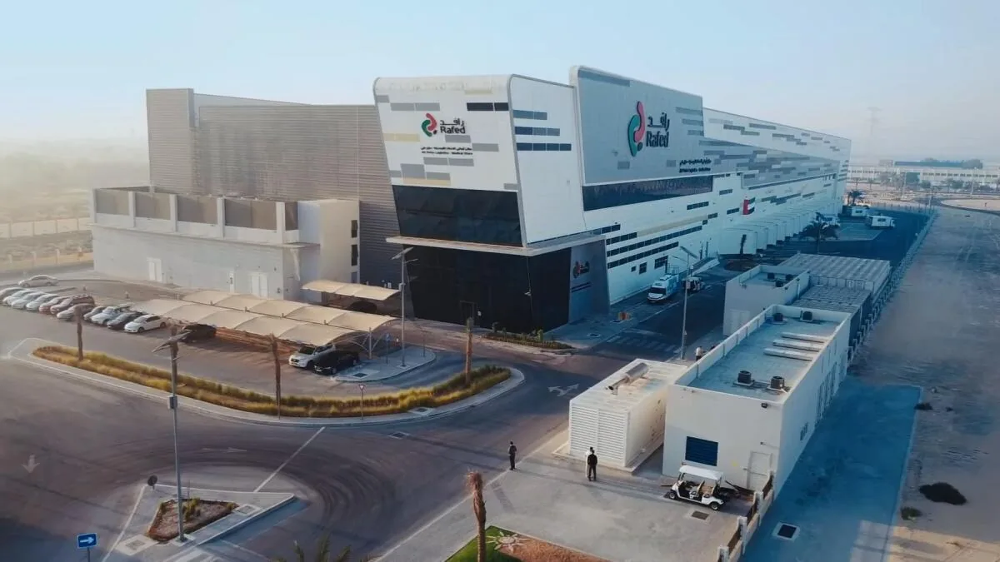

Port-ops directors, DC managers, and airport ground-handling teams all run the same fundamental playbook — fuse sensor feeds, surface exceptions, dispatch resources, hold the SLA. Innfini gives them one operating fabric, used by AD Ports Group at one of the region's largest port complexes.

Multi-terminal, multi-yard operating picture. Live state across warehousing, terminals, fleet and supplier coordination.
Continuous temperature and condition sensing via IoT loggers. Breach alerts in seconds.
Gate, dock, hostler and door automation. Driver self-check-in. Throughput up, labor down, errors gone.
Predictive model flags pallets/trailers at SLA risk two hours ahead. Agents reroute or pre-stage labor before breach.
Self-service scheduling, delivery booking, dispatch coordination, document exchange.
Vehicle telemetry, route optimization, delivery confirmation. ETAs customers can plan against.
"We have one operating picture for the first time. Supplier coordination went from email threads to a portal. Cold-chain integrity is monitored 24/7 instead of spot-checked." — Operations director, AD Ports Group
A 90-minute working session with our Command & Control solutions team. We walk your environment, your systems, and your operators' day — and show what an agentic operating layer would change.